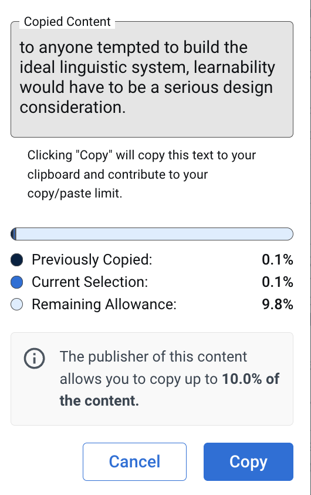

(10.8.2025) Updated the projects, might have more to come.
(10.1.2025)
sci*nce
(10.1.2025) My vision is crystal clear, but the path towards changes all the time.
(9.27.2025)
Feeling into Words Seamus Heaney
The question, as ever, is 'How with this rage shall beauty hold a plea?' And my answer is, by offering 'befitting emblems of adversity'.
(9.26.2025)
From the top of the Churchill house you can see four florescent domes like mushroom caps, when you look left. If you look right you are struck instead by a great incongruity. Here lies the grey brick and stone crosses and windows of the BioMed building. The wings and foyers are subdued, tastefully lit, while as they rise upwards the sophistication gives way to a hint of a brutal industrial scale. The fifth, sixth, seventh floors: dark brick and pale rectangles, set against the windows full of piercing light. They are just barely the scale at which you are both disappointed at your own vantage point, and impressed by their remoteness.
Let's talk about something else. Let's talk about color. I saw a chart once which looked at the declining rates of cars which were any shade but white and black. From the thirties up to the 90s there's a steady increase in yellows, reds, greens, blues: then at the turn of the millenium its like those graphs of anthropogenic extinction. Once, we lived in a time full of colors, birds, and insects. I am nearly certain of this. From my tasteful metal chair (a musical skeleton absent vibrational capabilities) sitting atop a tasteful concrete block, all the cars I see are blacks and greys.
Black exudes power, but it loses something too. It loses the definition of color through which it must be perceived. What can be described only in shades, created and recreated until we are willing to let it go? These are, for the most part formal questions. As Berger says, art is not about life, but creation. Perhaps it is also our best attempts to transform the instantaneous into the permanent. If you live indefinitely in the present moment, then the existence of artistic objects are astonishing. As far as I have figured out, nobody has figured out another way to live.
(9.25.2025) If it was all collage, if it was all bits and pieces of paper assembled and hung to one another, I wouldn't want to do it. It must be better to examine a thing from a single perspective, and really try to understand it, to build up and forget it again until your own surroundings bring it back to life. You can do mise en place but there is no recipe except the one your own heart desires.
(9.20.2025)
I am fully in support of shan't reentering the lexicon. How't else one describe
a volitional abberation?
(9.19.2025)
In my last year of college, we revisit old patterns.
So that we can appreciate, the newly unincomprehensible! Fluency barred realization.
e.e. cummings
anyone lived in a pretty how town
(with up so floating many bells down)
spring summer autumn winter
he sang his didn't he danced his did.
(9.14.2025)
Once, I had a pinched snout and short dreams
in a place where I pointed out the window at infinity
There were velvet reclining seats, glass as cold as ice
But I dropped my ticket and spent the rest
of the night trying to copy it from memory
A declaration became a confession; a confession a joke
I could not bring myself to finish
So I shook my head and climbed the cold steel rungs of the ladder
thirty miles down from heaven
(9.10.2025)
Nabakov is a savvy writer. Still, I have to ask, why not observation?
(9.8.2025)
The word 'Carcinisation', at least the way I see it used, is an autonym: a name which biologists converged upon to describe a phenomenon in their field, which is in fact an arbitrary example of a broader trend. Here's another passage from Language and the Mind describing arrows, not crabs as their subject matter:
"Arrows, presumably invented independently by a great many human groups, have certain similarities—they have a sharp point at the front end and something to stabilize the back end, they tend to be similar lengths, and so on. But
these properties simply reflect the optimal solutions for the problem at hand."
Haha

We use language like it's free: we're all idealists when we talk to one another.
(9.5.2025) Let's try some more freeform.
Draft Re: Some Notes on Song
Today as I was out running a car honked as I ran on the sidewalk, along some cluster of townhome driveways. It was at the end of Reservoir, a very long and wide road heading south from Providence. I kept running, but out of instinct I glanced left, and saw a tall white man and woman driving into the space I had been a few seconds prior. I thought to myself, I had probably been mistaken. The honk had not been a welcome or greeting, but a form of recognition. The gesture had not been about me, but about themselves: announcing their own presence on the road at a distance dangerously close to my own.
But the fact remains that over the years people have responded to movement through an artificial, self-sustained shout of their own. When they occur spontaneously as a result of my own activity, the supportive honks are some of the strongest and delightful noises I have had the pleasure of playing a role in creating. It's peculiar how the road and the climate in which a honk registers, especially on the prolonged periods of contact during incoming traffic may use such signals, create a series of points in time in which the use of the horn is intensified. In the back of my mind for almost every car which goes by some social registry of the passerby exists, and the prospect of being noticed delights and scares me. I imagine myself as a thin piece of wire waiting to get struck by lightning.
The kinds of communication are so varied. When I watch others, I can almost never do it right on my own. On some days, its a short double tap honk, on another multiple triples which emulate the sirens of a boxing ring or soccer game. The intensity of the honk matters too, whether it is a slow, drawn out, and persistent, or a drum tap followed by a sonorous melodic sound. A final patter that redshifts before it fades away.
In some cases it's not a honk, they are words of praise, words which are never remembered the way they were said but in attitudes they stay. By the King County Metropolitan Airport, in the loose gravel banks of a six-lane freeway, I witnessed a motorcyclist in full regalia watch my own eyes as I ran in his direction, and ensuring I was watching him watch me, throttle his engine and shift his fingers into 'hang loose' signs. The attempts at leveling with me. The attempts at gifting me respect. The attempts at speaking up, or the smiles which creep over those who do not know why but revel in the thought that someone is doing it.
What thoughts go through the heads of those who watch the runners up and down the city roads? I tell myself I will never judge them by their speeds. I tell myself I will judge them by their bravery, but I end up trying to understand them by their self-absorption. The number of feathers they envision themselves to be shedding. How much they commit towards forcing themselves to understand fully that this is the world, and that this is all there is.
(8.29.2025)
Imma write like Proust
When I am so moved by a movie so that I have felt some fractional part of my own identity change due to the transference seen through the screen, I try very hard to remember a single name from the list of credits, a hair stylist or an animation support staff, so that they gain a brief flash of recognition in the broader sphere of public life, to close the loop of giving and getting, to make real their sacrifices and reifying their expectations for success. Yet this is not in the hopes of symmetrical recognition, because I know that the only things which drive art are arbitrary purposeless gifts of interpretation and understanding, in which a hand is held still under a running faucet and the mind counts from one to ten.
(rather it must be my civic duty speaking, my pleasure to be one of the crowd)
(8.23.2025) The days are long, but they are never long enough
(8.20.2025)
Happy to report that I am still allergic to vacation ads
(8.19.2025)
Once, I was paid seven dollars and forty five cents through an app on my phone to wait inside a restaurant. It was probably around nine pm but it felt a lot later. There was a lot of gravel and the door was open. The building was low slung with electric light spilling out into the dark, and a massive glass tank bubbled gently under auspicious wishes and the hum of an electric fan. The light made the glass look all kinds of shades, yellow ochre and olive and maroon. All along the wall stood kitchen equipment, upside-down chairs, japanese screens and rolled up paintings. I don't remember if there were any fish in the tank. I don't think it really mattered.
(8.18.2025)
Q: What's the difference between an IDEA and a PLAN?
A: A PLAN is the OPPOSITE of an IDEA. A PLAN is FILLING IN THE BLANKS.
A: Sometimes, the best PLAN is no PLAN at all. God did a good job with that because he was blessed with INFINITE TIME.
A: (For the rest of us, it's probably best to try to build a rollercoaster)
(8.4.2025) I will be patient and not make so many mistakes
(8.4.2025) What a tiny, magnificent thread of history. What a gorgeous, infinitesmal part of the world. What a fragile and perfect hallucination. What a terribly derivative work of art. What a shocking fragment of language. What a devastating piece of news.
What a beautiful view.
(7.28.2025) Even if I could only invent another form of prayer
(7.24.2025) There are a lot of numbers, luckily we only care about some of them.
There's something beautiful about an unfurnished word, like neologisms, with only its simple original meaning.
(7.19.2025) Karnoffsky has an idea for the “most conservative utopia”: an idea for a society that’s as close to ours as possible while being unambiguously better. He suggests “everything is the same except cancer doesn’t exist”.
(7.19.2025) I want to build a lot, lot, lot, lot, lot, lot more. And I want to touch hearts and minds.
(7.10.2025): Boaz Klartag: "I thought, I'm 47 years old, all my life I wanted to study lattices, if I don't do it now it's never going to happen."
(7.10.2025) I will be more patient and not make as many mistakes.
(7.8.2025) Channeling my inner shepherd.
(7.6.2025) Bob Baldo
Q: What is it like to ride in a blimp?
A: ...The pilot sits in the front of the cabin and there are 4 isles 2 seats on each side of the walk way. I was the only passenger. The take off was exciting. Almost straight up. Once we reached altitude. I'm must say it was a bit anti climatic. Very slow. Noisy and almost boring. We were up for about 45 minutes. Landed and drove home. But I'm the only person in this world that has ridden on the Goodyear blimp , has met a man who survived 9/11. He was in the first tower that got hit and made it out. And I have shook hands with Freddie Blassie the wrestling star. And nobody in this world can say that but me
(6.30.2025)
number, turnout, snowing
(6.29.2025) Jeremy Bernstein, The Merely Very Good
"After the lecture one of the students asked Eliot what he thought the most beautiful line in the English language was, an insane question, really, like asking for the largest number. Much to my amazement Eliot asnwered without the slightest hesitation "But look, the morn in russet mantle clad, Walks o'er the dew of yon high eastward hill".
(6.29.2025) Sleep that knits up the raveled sleeve of care (sleep that travels up the raveled sleeve of care) -- Macbeth qtd. J.M.Coetzee,What is Realism
Q: When is good not good enough? A: When you are faced with the task of bringing something to life.
It is only in the durational mode that we can grasp that noncontingent relation to experience, the perception that used to be called "under the aspect of eternity" -- the seeing of life in a way that acknowledges as its foundation the mystery of the fact of existence.
The artist is a threat because of the effect of art, no matter what its ostensible subject might be, is to alter the relation to experience, to affect a change of state -- and the main point of the new relation is not to clarify concrete matters in the here and now but to propose an understanding that transcends the here and now.
The constant deferral of significance is the operative principle of most lives... we greet the world outside our immediate sphere of concern as a chaos essentially beyond our grasp (I strongly disagree with this but its a striking image), as an event the meaning of which will be disclosed to us later, if ever. Everything in the novel points to meaning... it smelts contigency and returns it as meaning. (The NOVEL is A FOUNTAIN of PASSIVE MEANING) The now time is not the same thing as flow.
(6.23.2025) Dispatches from c4
Your lifespan can be what ever you want, I suggest a long one. I'm using a fairy so I have a very long life span.Your sim will not have a job to start out with so you will need to make money in other ways like fishing, searching for flowers or gems to sell.
What is a Termite Bond? What are They Good For & are Bonds Worth the Cost?
members can add as many Haves and Wants all year long and they get delivered to the industry by EMail.
The letters otel are part of the word hotel and part of the word motel. So search the subject line with these letters can find hotels and motels. Try typing otel here in the subject line. You get both hotels and motels because otel is part of each word.
Dana Milbank: Trump can do whatever he wants. God help us.
(6.21.2025)
The new black mirror episodes are really good. My personal rankings are Eulogy > Common People > Bete Noire > Plaything. Plaything is an overcooked British version of certain SCPs. Bete Noire is mostly fun because of the detail put into mimicking a corporate chocolate enterprise. Common People rehashes some themes from prior episodes but its able to articulate the difference between malevolence and indifference particularly well. Eulogy is able to portray a new mirror through a touching story.
From previous episodes, Nosedive is great. I didn't like Shut Up and Dance as much as I remembered, its high strung for almost no reason.
Might there's be a way to transmit ways of seeing? Not as in style transfer. It would require extremely high resolution images and involve flashing isolated visual stimuli, so as to intersperse your own thinking with someone else's. We privilege legible messages in text. We privilege media. But it's always such a tiny fraction of the response.
(6.12.2025) I want to hold pieces of paper of varying quality dear to my heart.
(6.12.2025) Family Feud : hungry mouths all trying to reach the center of something. Hoping that in a spark of intuition or a lemma of rational thought there is a meal to keep them alive.
I love the dirty ones more than the minced, in that I respect
extravagant expression more than reserved. I admire reserve, especially when
taken to an ascetic nth...Horse, then, unhorses what is not horse. -- C.D. Wright
(6.7.2025) I've detached this website from my professional identity, which means I will get less visits. But hopefully people can come here to stop and think.
You equate many forms of abstraction with one another, causing you to hallucinate opportunities where there are none ...When such shamanic impulses existed in settler days their incoherent napkin diagrams at least proposed rockets which pointed towards the sky, whereas your own ambitions are pointed variously at the nearest shopping mall, parking lot, or a more handsome-looking piece of shrubbery. In this way, you confuse the social and aesthetic joys of modern travel with the pure aesthetic happiness of wandering up and down well-worn roads.
(6.4.2025) Being so precise with language as to sculpt a teapot
(6.3.2025) After spending last saturday in RISD's Fleet library, I've developed another MVP that I'm pretty excited about. Hope to release an early version once I can figure out what to call it.
(5.25.2025) Read The Tempest.
(5.19.2025) Reading Loudermilk by Lucy Ives, The Power Broker, and Tristes Tropiques by Levi-Strauss, which is probably the most compulsively readable of the three. Also trying to start Entropy City but probably won't get through it.
(5.19.2025) Do it again so much better it's something new entirely
It's so easy to say things you don't believe. Not because your own convictions change, but because belief is an extraordinary condition.
(5.13.2025) I want to be more than cynical. I want to be more than footnotes. I want to wear black crosses on the surface of my skin. I want to be totally committed to the cause of living.
(5.13.2025) What I am passionate about, in a vacuum, does not matter. What I am passionate about now, within the flow of time, does.
(5.12.2025) Mistiming is not a license to relax
(5.11.2025)
I finished reading *Collapse* by Jared Diamond. The descriptions of historical collapses of civilization were engrossing. Shifting to present-day issues made the problems described far less fantastical and more politically urgent. Separate from the technology, the brutal reality of wells running dry and the water table getting lower and lower is how environmental management works in practice. It seems like caring about the environment is *the* basic commitment of anyone who is concerned with wellbeing outside of economic reality. But then again, the book suffers from anthropology: society must have underlying structure! There must be a taxonomy of sorts! comparisons will make sense. etc.
There's an intoxicating feeling of power you get when you realize that a certain kind of thing that has seemed vague and difficult for a number of unrelated reasons reduces to a ton of work (a precisely articulated network of concepts), it's almost a creatively enriching process but not quite. In the other direction educational outflows establish negative ground, so that it's possible to make something out by viewing work from a far distance but not from up close.
I really will have time to work on my projects. I did so the most my sophomore year, less freshman year because I was knocked down by the immediate realities of artistic machinery, in a limited capability my junior fall, and really not at all this spring semester. I will be more patient with myself but not make as many mistakes.
A good place to play chess
(4.25.2025) I will be more patient with myself and not make as many mistakes.
(4.24.2025)
"I am scared that I am not using any of my possessions enough. I am scared that every new thing I acquire will one day end up in a landfill. I am scared that anything I make with these possessions so too will end up in a landfill. "
A swirling vacuum of space which exhibits an inexorable pull on bodies still learning to walk on their own accord like the center of a party where no one knows anyone and the musics too loud to talk named NYC.
(4.15.2025)
//<>>><><>..<>..>>>>
//..<><<<>..<>..<>>>
//<>..<>>><>..<>..>>
//<<..>><<<<..>>..>>
//<<<<..>>>><<..>>>>
//<<..>>..<<<<>>..>>
\\//\\//\\//\\//\\//
//\\//\///\\//\///\/
(4.10.2025) A lot of the excitement of college is in the idea that there are an infinite number of possibilities ahead of you. On realizing that there is one real life that you will truly be able to live out, it is up to you to decorate it the best way you can. A lot of my time this semester has been doing proofs or various forms of rigorous writing, in part because I've usually been able to color in or sketch in gaps alright. What this has led me to realize again is that writing tight and restrained is not writing well, and omitting subjects when speaking near holds listeners in contempt. 在中文课里我们学到了形容/内容的差异，相比较英文 'the map on the wall' 跟据 '墙上的地图', 然我先到广大无边的考试文化，一简化的陈述到词句到生词。举起的手，一个问题的答案，对和错。
It surprises me still, the endless depth and variety of intelligible communication which could not have come out of a fully conscious mind.
(4.10.2025) Finished Frankenstein by Mary Shelley and almost finished The Silent Patient by Alex Michaelides, which was recommended out of the blue. Enjoying Two House by Food House.
I saw a sign for a restaurant that said "Pizza Works" with a picture of a pizza with the crust cut into little gears. It was completely nonsensical but a joy to witness.
(4.3.2025) All bad poetry springs from genuine feeling -- seriously? Seriously? Seriously? This is the most easily falsifiable statement in the world.
(4.3.2025) ???? this is getting ridiculous. And its not a vibe
(4.2.2025)
(4.2.2025) My ambition is in getting read and not in writing. Many true and useless things said here. Many false and useful things said in person.
(3.31.2025) On second thought, it's probably the pens.
Read White Noise over break. It was a remarkably styled book, reminded me of George Saunders. A lot of conversational cliffs and incredibly specific descriptions. This is the realism described by Ayn Rand she strives to avoid. Started The Power Broker, about an urban planner called Robert Moses.
(3.30.2025) In general, my drawings have been trending starker and bleaker and stranger since freshman year, but it's good. Not presupposing ideal bodies. Not intentional deprivation in search of motivation. I wondered what the purpose of a conversation was: what it could reveal about someone or something. The closest thing I could come up with was the process of drawing from nothing. It's a good description because when the topic itself is nonexistent: a comparison of processes, instead of circling around a great big empty space.
What do you see when you see "exit"? What do you think of when you say someone is creative?
(3.18.2025)
(3.16.2025) The hard part of being superstitious is not knowing what your superstitions are.
(3.10.2025) 人们很容易就可以网上发表自己的看法和意见。
(3.8.2025) Only on the internet is there an illusion of omnipresence or a complete sincerity of presence. It's more than a little paradoxical.
(3.6.2025) I think for the first time since freshman fall I'm taking five intensive classes where I could spend at least twice the amount of time on each and learn about that much more: entrepreneurship, real analysis, DS & algorithms, algorithmic aspects of ML, and chinese. This has come at the expense of creative time. The best way I've figured out to deal with this is to try to minimize the amount of context switching and not look for similarities between my classes (other than really shallow things like both algorithms classes talking about bloom filters) because unfortunately doing so is a kind of creative work.
Andrew Pierre Hart:
(3.5.2025）I'm pretty excited about the upcoming months. I haven't really spent time consistently working on projects this semester and it's turned out alright. Something that really bothered me in the last couple years would be someone describing what they do as a puzzle, just because I've never seen truly challenging and rewarding problems described that way. It's a problem with how I view puzzles I guess.
(2.23.2025) I have a lot to do!
(2.23.2025)
your fluencies only reflect your shortcomings and speed won't turn out prism. You've tried to learn to dance but what's taught misses purpose. When eyes reflect from your skin you will them through again.
(2.21.2025)
A rich mind, brimming mind uncaught. quantity has a quality all its own. By quantity I mean repetition. By repetition I mean taking steps to stay alive. I could catch a salmon, I could bite a dog.A flat terror of logic being forced into the ground. ADP prance logic four. Gotten without whimsy, gifted, unfortunately. Cotton unbrushed lips which tellers understood informally. Unclaimed self-subscribed flinching. This is shape cutting. Said then not around kept waiting, those gluttons. A coarse shadow of mine tied to the outward ceiling. Then actual reinforced gunmetal bouncing clear, but tended towards blueity. When incapable amusement barred against all others, not a word was left unsaid.
(2.20.2025) One of my ideas from SBI in spring of 2024 was to develop a kind of virtual world by patching together 3D spheres from different apartment listings online. You could have little coins and scavenger hunts or make it a speedrun challenge to explore all of the rooms as fast as possible. I wnder if this would be pitchable to BRGD.
(2.15.2025)
there got to be a way
there got to be a way
is a song by american singer and songwriter mariah carey from her
there got to be a way
was the only composition to make the final track listing it is
there got to be a way
was chosen for the final track listing co produced by
there got to be a way
is an r b pop music song with elements of gospel the theme of social activism can be heard in the lyrics
there got to be a way
a mesmerizing track to mark twenty five years since the release of
there got to be a way
follows the same melodic tone as the album opener vision of love but highlighted their stark lyrical differences as the former is about social activism and the latter is about love although he praised carey vocals writing that she deploys one of her best whistle notes of her career he felt that the aim for broad appeal comes at the expense of memorable lyrics music video the accompanying music video begins with a shot of an empty street followed by clips of disadvantaged and poorer members of society going about their daily activities two men play dominoes on a wooden crate outside a building a gang make fun of an elderly man hanging newspapers outside his store and an obese woman walks down the street clips of carey leaning against a wall and sitting on some steps looking on at what is happening are shown as the first chorus begins everyone starts to dance joyfully in the street and help those in need a gospel choir comes out of one of the buildings as the street becomes more crowded with people of all ages and backgrounds rejoicing and getting along with each other one of the shops in the background has a neon light outside the entrance which says jesus saves track listings
there got to be a way
original album version 4 52
there got to be a way
7 remix
there got to be a way
12 remix
there got to be a way
(2.14.2025) It's meaningless to ridicule simplicity.
(2.11.2025)
A fun exercise in reinstantiating some links in my brain. These are all common Mac apps, try to guess what they are.
(2.9.2025)
Things that I have begun to like more:
- small talk
- patience
- starting from the beginning
Things that I have begun to dislike more:
- formalism for formalism's sake
- returning to the beginning
(2.5.2025) The way that the conntations of "locked-in" has changed from negative, externally imposed constraints to positive, internal constraints is fascinating.
(2.5.2025) Your sense of a plot is directly related to the degree to which you can control, or predict, or retrospectively understand, some thread or object or process within your life.
(2.1.2025) My drawings have been pretty bad lately. I learned to compose accurately, and then gradually added abstraction. I would think of an process or object, and it would gradually arise out of drawing unrelated things. Now my choices are abstraction, realism, or landscapes, none of which are what I want to do. Charcoal helps a good deal. But it's still an issue with the medium.
(2.1.2025) Here is a very true statement, nevertheless in which room for interpretation is great: History is the production and reproduction of real life. What you call real life is not what I would, but what history promises, in one way or another, is the ability to see how others felt. What production and reproduction reflect could be artificial and natural processes, life and art etc. Perhaps it is the sense of situation which reproduction replicates, while production fails to capture. Maybe production is doing too much work, but can't you imagine what it means? An orchestra, a factory, a game of chess. What is articulated in the statement is the expressive potential of history, an ambition which stretches your hands behind your head and tries to touch the ground.
(1.26.2025) The Atlantic: https://www.theatlantic.com/magazine/archive/2025/02/american-loneliness-personality-politics/681091/. I don't think loneliness is not the right way to characterize the issue, nor political moderation or social neededness. The idea of cohesion is a little better: maybe it's the lack of a good feeling of inertia.
(1.21.2025) Articulation is not the most important thing.
(1.21.2025) One odd thing about nineteenth century French wallpaper is how colorful it could be
(1.21.2025) You will take the flag and throw it onto the ledge, and take the ledge and turn it inside out. And then scoop the water out from underneath your feet, and curl your toes to make spaces for the ripples to pass beneath, and move your fingers back, press them against your sides, open up your core against the locked boxes on the shoreline. Don't wear the shirts ...
... who is unable to create a box with your own thinking, a box which describes itself and a paper which describes its own body. A delicious beautiful body, a body of coiled steel, a charged, idealistic shape of planes and circuits, which wrap and tangle with the lives of the rich and the beautiful, the beautiful faces which have more than beautiful smiles, which are able to go beyond the current spaces in which people live and define a new kind of hierarchy within which I live alone. VIsitors are allowed but only with the bell. Only with the chime, entrance and deference to the sky ...
... the ferocious and not entirely sanitized burn could somehow go into the boxes of arithmetical thinking, without attestation or tuning. The transformation of a large and wide object into a thin and forceable shape. The sharpening of a mind on a stone which is turned inwards. The focus on a subject which is truly hard.
(12.17.2024) Rocks rock
(12.17.2024) The first handbook for Scoutmasters, published in 1912, promised that new boy members would be instinctively interested in their first outdoor troop meeting becaguse they “are yearning to know their world. To unlock the mysteries of nature and to know their relationship to them.” The author, though, cut short any suggestion that the purpose for Scouts’ discovery of nature’s mysteries might be spiritual growth, “They must learn to recognize the forces and the laws of operation which underlie the manifestations of nature. Their wonder and interest must not be satisfied with the mystery and romance of it all but their ability to use and master these forces must be impressed upon them. This mastery will give knowledge and power for later life-work.”
(12.14.2024) Description moves nothing. Once you accept that, you are free to work!
(12.11.2024) I have a lot of creative work from this semester, although as usual much of it is not what I expected it to be. Overall my favorite classes were Information Theory in Language and Narrative Nonfiction. Here is a list:
- There is something strange going on with model surprisal and reading times, that is to say a missing link . Basically everything I'm putting into my Information Theory in Language paper relates to this in some way:
ˀ
Consider the garden path sentence, "the new doctor offered the operation appeared increasingly likely to succeed in her career". The selectional constraints which "offered" poses on the new doctor, as opposed to the operation, is the primary driver of ambiguity in the sentence: the typicality of the verb with the doctor as subject, as opposed to the operation as object. The respective main and reduced clause frames could be formulated as standalone sentences, and then compared by both humans and language models: for instance, reading times could be measured and surprisal could be calculated for "the new doctor offered the experiment to patients" and "the new doctor offered the experiment succeeded in his career". Then, these ratios could be compared: if there exists high variability of the ratio across different examples sharing a syntactic structure, e.g. the Main Verb/Reduced Relative, it is evidence that reading times are affected by the selectional constraints of the verb, irrespective of the underlying syntactic structure.
- I did develop a context visualization app for language model feature descriptions, which has a lot of room for improvement
- I wanted to develop a node editor for OverpassQL queries that I haven't gotten around to
- Made some posters, not much art though. Closest would be the inktober sketches below
- Made a poster for the semester's Curry'd Function
-
Around 5,000 words of somewhat fantastical narrative nonfiction pitches, some of those I will put here when I clean them up (?)
- Idea. do syntactic templates reveal linearly approximable contexts? This would basically be a followup from my summer research, between this paper and this one
This semester was probably the first one in which I have set hard word limits for myself, and found my writing enriched by it.
(11.27.2024) One of my commonly reoccurring thoughts is how much effort you need to put into speaking in order to be understood. My linguistics professor is extremely cautious about using effort as a distinguishing factor between utterances. So, I'm not sure if this is a universal feeling.
(11.12.2024) My instincts for self-sufficiency are spreading me too thin. My "thoroughness". When I heard myself described this way I immediately thought of the many times I've penciled in a shape completely black, because that's the failsafe for iteration.
(11.5.2024) I love design. What I meant by this is unfortunately not related to user experience. But I still love it.
(10.31.2024) Old, H,obo, Wisdom,---,Jun, ,0,7,,, ,2,0,1,2,,, ,0,1,:,5,1, AM,I, hunted, an, old, two, track, road, at, one, time, and, was, surprised, by, the, number, of, coins, I, found, along, that, road, that, really, appeared, to, go, nowhere,., I, mentioned, it, to, a, man, who, owned, property, near, the, road, and, he, said, that, there, was, a, horse, boarding, stable, for, years, right, by, that, road, and, people, rode, their, horses, up, and, down, it, for, years,., Apparently, bouncing, up, and, down, that, road, on, horses, people, lost, a, lot, of, change, out, of, their, pockets,., I, haven,',t, had, that, kind, of, luck, on, every, road, but, that, one, certainly, did, produce, a, lot, of, coins,.
(10.29.2024) Also before I forget: The global outlook for consumers is improving. Consumers are determined in their resilience to stay ahead, vigilant against further disruption, and intentional about every aspect of their daily spending.
(10.29.2024) The socialexplorer viewer is very well-designed, it uses a visuals to communicate common actions like locating the user, and downloading the map without language. Part of my job at the Brown Library is to revise tutorials for clarity and ease of communication, and as part of that I ended up trying to download little svg icons from the interface to reference in the tutorial. The issue was that they were dynamically rendered -- and it turns out many of them are actually part of a TrueType font linked on the website! I worked with Fontforge for the sonority project, but getting it to work with python was tricky. Anyways, here are some of the outputs

I'm getting some ideas for painting but I don't know the best medium to express these exactly.
(10.27.2024)
(10.22.2024) The thrill of a stopped escalator or an empty hallway is in transgression, not against the clocks of other people but your own. If you can coolly dissect the mechanisms of progress you can transcend them, or at least act them out in full self-consciousness. That is to say, it obviously a terrible guide for living, but it is a truth all on its own.
(10.19.2024) The Changing Fictions of Masculinity: In fact, this is all realism ever was and ever will be: the arming or authorizing of literary elements -- regardless of their ultimate mimetic value -- by what each society calls its truth. And yet we might say that stories, like people, have a way of binding in more than any body, single or corporate, intends.
(10.14.2024) Catena:
(9.30.2024) You got it!
(9.24.2024) I changed my mind I got an idea
(9.23.2024) I am going to be so busy this week. I need an outlet to say things. I don't think Narrative Nonfiction is filling that gap, particularly because I agree my pitches last week weren't great, and I feel the pull of writing for an audience. I'm noticeably better at expressing "thoughts" in writing, but there's a reason I didn't like to do that before. Something to circle back and touch base on
But how did you get my number? And my first pet's name? Who can I blame > The captcha.. And how did you get my zipcode? for the house before I moved away > from my landlord
(9.19.2024) I feel safe swimming around in sealed circles, where my applications of meaning tend to be very clear. This works for my blog, which is a place for me to talk to myself. But wow, sometimes it feels so shallow. I've made the observation before in Screen-based Images, but when you always operate from a place of self-reflection, it's hard to avoid "cashing out" on yourself. If I want to write longer pieces, better put them somewhere else as well.
(9.19.2024) Tender is the Flesh feels like a thought experiment which has frozen over in every direction except gratuitous violence, but there's a passage that describes someone's words as boxes full of blank paper.
(9.19.2024) You can't take loans out on your future creative self, but if you're clever enough you can steal
(9.15.2024) The Splintered Mind says on unity of experience that "our ordinary condition, before rare unifying introspective and reflective actions, involves degrees of partial, imperfect unity, rather than complete unity or complete disunity". But I don't think anyone actually believes in complete unity of experience. Rosenthal talks about the unity of consciousness. I think that more complete unities correspond to greater aesthetic satisfaction, and that there is a notion of periodicity, or wavelength, in the process of this achievement which is as least as definite as emotions are. The methods of accomplishing unity are independent of higher-order thoughts, but thought can guide practice, so that you can actively desire unity and get better at achieving it.
(9.5.2024)
(9.2.2024) The real world is the world without you. Q: Who understands that? And to what degree?
(9.2.2024) Beliefs I will carry through shopping period:
- Ignorance is not something to be proud of
- All advice is useful (for the person its meant for)
(9.2.2024) "A fool is someone who has lost everything but their reason" -- Nietzche
Watching
Fire of Love made me realize my tendency to perceive agony in many landscapes. There's no reason for this perception, its plausibly a product of natural selection (which is hardly better than no explanation). From a cultural perspective, it could be a vestige of ascribing moral values to wilderness (as opposed to what?)
Whatever its causes are, it definitely goes beyond both the purely aesthetic and purely geographic. The natural is not separable from the self.
(8.12.2024)
Andrei Karpathy
"RLHF is a kind of way to benefit from this gap of 'easiness' of human supervision...
... getting actual rewards (i.e. the equivalent of win the game) is really difficult in the open-ended problem solving tasks... how do you give an objective reward for summarizing an article? Or answering a slightly ambiguous question about some pip install issue? Or telling a joke? Or re-writing some Java code to Python? ".
well-formed sentences < RLHF supervised operations < unsupervised operations < language
(8.12.2024) Cuando se necesita recordar palabras a aprender una lengua 😢😢😢
(8.8.2024) And here it is.
(8.7.2024) I "need" (P3) to make a list of things to do in COS for next year's REU students. This is my note so I don't forget
(8.7.2024)
d
[Spoilers] Hunger (2023) is centered around two characters: one is Auy, a young female cook who runs her family noodle shop. The other is the European-looking Chef Paul and his famous catering service known as "Hunger". It is set in contemporary Thailand. Many of the comments made reflect the aspirations and fears of young adults there and elsewhere: Auy's stability in running the family business against the inability to pursue into any other career, nepotism at large firms denying promotions, the insubstantial nature of wealth as it is created virtually, through online content creation or cryptocurrency empires.
This film goes beyond the flagrantly satirical elements of "The Menu" to provide a much more human look at the relationship between a chef and his clients. It might not be more realistic, but it resonated with me on more levels. It raised questions about what a dream is, how hard it is to hold fulfillment and desire at once, and how happiness viewed from this perspective is empty: how "wish-fulfillment" is necessarily an outside diagnosis and not a true description. This made me think more about what has been called my "obsession with technology". I've felt that my desire has been to find perspectives which are the most true to form, but this is very easily the most *intuitive* perspective instead of the most *true*. The difference between a sport and a game how strong something is at its core: the delineations of a sport provides a stable foundation for strategy whereas a game is built around and between those strategies. I'm not going to think too much about this anymore but something something incremental developments enable gamification true technology is a leveler.
Anyways. In the final catering scene, Chef Paul and Auy are brought together to compete on three intersecting areas of culinary skill, authenticity, and self-image: Auy crafts a narrative, not around her as a woman breaking barriers in a male-dominated industry but around familial love and understanding through food. Chef Paul then brutalizes this narrative by serving hundreds of identical bowls of hot water, and giving a one and a half sentence speech on "common humanity". The crowd flocks from one to the next, unable to distinguish heartfelt messages from cynically delivered platitudes.
The final words of Tone to Auy ("Isn't *this*$^1$ what *you*$^2$ hungered for?") could be interpreted as a very traditional kind of mockery$^1$, very cynical and self-defeating. But Tone has been a supporter of Auy throughout the film: he wants her to succeed and believes that she wants to. That tinges the scene with the sadness of misunderstanding$^2$. If Tos provides Auy the ability to become a viral sensation, Tone provides Auy with the ability to differentiate sensation from reality, a baseline which forces her to reevaluate her priorities. She realizes that Chef Paul cannot possibly be serving his clients out of love: they will always be the objects of affection, capable of endless absorption of love, time, and skill, and polite (monetary) reciprocation. Instead of continuing to work towards understanding, she chooses to return to her family business.
The pace of the ending music is unsettling, and it does not indicate a traditional happy ending as many believe. Nothing has been resolved: popularity and tradition are still at odds. She cannot cook for her community without drawing attention, attention which will change her and her clientele. Aun knows this, and believes even her efforts to restore her family kitchen will inevitably involve compromise and division.
(8.4.2024)
(8.4.2024) Halfway through Random Family by Adrian Nicole LeBlanc, also trying to get through Children of Dune. The exposition and continual political scheming is really getting on my nerves.
(8.4.2024) I often mistake kindness for true understanding and true understanding for kindness
(7.26.2024)
(7.20.2024)
Richard Sennett, Humanism
"In conformity with thy free judgement, in whose hands I have placed thee, thou art confined by no bounds, and thou wilt fix limits of nature for thyself" - Pico della Mirandola
"Voice" is both a personal and a social issue. To hold fragmentary experiences together in time requires the capacity to step back from the power of each event to hurt or disorien. Sheer surrender to the moment weakens one's voice. the capcity to stand in and out of a situation at the same time is a practical strategy for survival.
Where life narratives in which difference has been experienced on informal, open-ended, and cooperative terms become what the anthropologist Clifford Geertz once called "thick descriptions", the narrator is conveying a more complex, and engaging, social reality.
(7.15.2024)
Jonathan Frazen: Substantial swatches of my personal history were going dead from within, from my talking about them too often.
(7.12.2024)
Read The Sound and the Fury, re-read Dune and Dune Messiah, the Mistborn series (starting with Wax and Wayne and then from the beginning), reading The Canon by Natalie Angier. Also reading Death and Designation among the Asadi by Michael Bishop and the encompassing novel Transfigurations (I was skeptical by the cover but it's really interesting... Avatar x Emerson). I got a copy of Ubik that I'm excited to start once I finish the rest of Dune.
So many ways of living... and we all end up in one of them. The privilege of choice must be understood to be enjoyed.
(6.29.2024) Erin Somers
I was alone after that.
But it was okay because I had my gardening.
No, I didn’t, but I had my tennis.
No, I didn’t, but I had my television.
I had my phone.
(6.27.2024) There is a never-ending conversation we have with advertisements in which you may reply once or twice a year. You are made to consider a peculiar relationship, the one which you have with your toothpaste or your swimsuit or your car brakes, in the captivity of reading or listening. Then you might go to the store (or not) and in a couple months the seasonal reports come in. And then they think, "I shouldn't have put a comma there". That is how a new thing is created, as new as any conversation can be.
(6.23.2024)
Hiking turns imposed necessities into real ones.
There is a relationship between difficulty of consumption and the level of understanding you achieve by simply having an open attitude.
(6.15.2024)
I had a dream where you had to shop for "real" words at the grocery store. I was panicking because I was running a script that modeled noun pluralization and realized I would go broke convincing myself a model could figure out the plural of "community".
Get more groceries, get eaten
get more groceries, get eaten
\ldots
wortlhess
\ldots
(6.1.2024) Wow, there is definitely something promising about compositional vector semantics. My current research isn't going in this direction but there are really nice models being built.
(5.22.2024) Updates always take longer than I expect but it's addictive. I could put whatever
I want here and someone will see it (eventually).
(5.22.2024) ***I'm just going to throw some more stuff here and then come back to fix it later yep definitely***
(5.14.2024) I don't want to be well-rounded. I want to be a fishhook.
(5.1.2024)
I want to take a serious writing class in college. My writing has regressed to frantic little notes to myself on my computer and regurgitated logic and ideas for two of my classes. I am proud of my reading lately, been finding some really great books and articles. And I am proud of several projects from this semester and last, some of which I will try to post here.
You can tell a lot about someone from the examples they give.
There are certainly words that I overuse but only in a broadly descriptive manner. Again, no intentional cameoflage.
You really see things differently when you draw them. And why does that matter? Because you are on top of the information food chain.
Keep trying to challenge yourself.
I lack patience but make up for it with fantastical daydreams of empty formless worlds analogical reasoning.
Locked in a never-ending catacomb of hallways and shuttered classrooms, able to catch the sky from the corners of your eye. Becoming acutely attuned to the presence of food. I could sit and watch the ceiling of BioMed for an entire day.
"You really like suspense". I really like it. I love forcing sensations on my readers. Haha.
The more something I make relates to my own self, the less I like it. The more something is unintelligible within my own idiolect, the, less I like it. Which doesn't keep me from feeling a sense of identification, so maybe it's all about ownership (for brief periods of time). But we are all on a timeshare.
The stakes of language are as high as you want them to be.
For the longest time I thought my artwork wouldn't survive without a caption, because the context mattered so much. I think that speaks to my fear of losing the complete attention of strangers.
So much of college comes down to reading (better) and writing (better). Again, really hard to say what that means exactly.
The way words are distributed is really interesting. I've got this notion in my head that they've replaced people except in the settings where people really care about conversations, which may make talking a lot less interesting. Words are a proof something was done, and at the highest level we care a lot about sending those signals. But there's a difference between billboards and toothpaste labels because the billboards are actually meant for reading, whereas toothpaste are more forced compliance.
This is no place for moralizing!
Yeah, I still think there's a right way to live.
So much is being done to for me every day.
(4.15.2024) It is not the place but its invocation that we can learn to enjoy
(4.14.2024) I accidentally uploaded a 12 mb png below, only heard about it when my bandwidth limit hit 75gb for the month. Sorry!!! It's jpeg now.
(4.6.2024) Is outer space objectively cool?
(3.31.2024) New names for my 4th semester classes. credit Steven Pinker for the last two.
- Inducting over One or Many of Infinite Airless Worlds
- Introduction to Heavy Machinery
- Human Signal Processing
- Inverse Optics in Practice
- Inverse Optics in Theory
(3.31.2024) A thousand words in a single image; How many images in a single word?
(3.22.2024) Wouldn't it be terrible if you understood it all immediately? No dialogue, only a receiver?
(3.19.2024) phonology is cool
(3.10.2024)
Watched [sic] yesterday, by Melissa Gibson and performed by Something on the Green. The ambitions in sic are very different from conventional ambition, but they still suffer from the same limitations. Frank is training to become an auctioneer; Theo is composing songs for a theme park ride. Babette is writing a history book about outbursts of anger. I really like Frank's character.
auctioneering brings to mind the detached, clinical sounds of the airport intercom, the weatherman, social roles that are all transitory or relational. They carry information which is of no particular importance except to their audience. Through a singular focus on the subjects, they make no claims on masculine or feminine identity, or the presence of a speaker. To train as an auctioneer, Frank repeats tongue twisters over and over. He isolates language as a gender-neutral force, phonetic constraints overriding purposeful language.
(...)
(2.28.2024)
(2.23.2024) Starter packs are modeling visual languages with formal grammar.
(2.22.2024) How much of it is studying nature? What is natural?
(2.17.2024) I was once given the remarkable opportunity to
(2.17.2024) it's like ,um,
a relationship that swings itself
like a baptism, a vision
or like getting hit by a car
(2.17.2024) I speak English!
(2.13.2024) You are always on top of the information food chain.
(2.13.2024) I understand myself to be incapable of repetition, drawing wider and wider circles around a core that knows itself only from the outside looking in. What has been interesting has been filling gaps, gaps which make glue seem an integral part of being, never mind it is actually something completely different.
(2.5.2024) (New Yorker) we rehearse a limited openness so that we can feel the solidity of our own private selves.
(2.1.2024) On this blog I will not use language to confuse people, or to make it hard to understand my thoughts. I will use language to 1. maintain a distinct identity, and to 2. enable myself to talk freely about things that matter to me.
(2.1.2024) Something I miss from lynnwood, more than the satisfaction of discovering & reaching landmarks, is finding parts of the world that are inequivocably mine.
(2.1.2024) Running is a signal!
(1.31.2024) we try hard to make things easy/boring but it's like cupping your hands around a faucet
(1.31.2024)
P: Take for example, dark chocolate and milk chocolate. If you ask children --
pauses
P: Which would you say children like more?
C: (in unison) ... Milk Chocolate
P: Right, okay. And then adults, they've been influenced in some way by culture and mass media, to change their tastes--
pauses
P: Which one would you say adults are expected to like?
C: (bashfully) ... Dark Chocolate
(1.31.2024) This regional science fair NOAA 3rd Place Pulse of the Planet winner is still working on the same things :)
(1.30.2024) There are theories that help you think and theories that hurt.
(1.25.2024) When will all of your problems ever be solved? You know what the answer is.
(1.25.2024) The best defense of why we study little things:
Both big and little things exist. We can make rules about big things, but those rules need to be EXPLICIT as to how they affect the little things we can observe. Otherwise they don't mean much at all. This is not a diminishment.
(12.2.2023) Are you happy with the
words which you've written?
And those boxes you've drawn --
they don't make a house
(11.21.2023) I love to see the word "famous" used offhandedly about things I know nothing about.
(11.21.2023) Pushing analogies to their limits.
(11.19.2023)
The purpose of satire: to force someone to assert a version of their beliefs that even to them seems absurd.
(11.16.2023)
Q: When is the sum greater than its parts?
A: When the seams are unforeseen.
A: When something is stolen.
A: When something is hidden.
(11.7.2023) The plan: Practice! Practice more! Practice even more! How brutally empty the mind might
be.
(10.30.2023) Nobody's going to give you the interesting problems you want to work on: nobody knows
how to make space for you because they've never seen your work. Asking the right questions is
half the fun: answering them can only be the closure.
(10.23.2023) Time management isn't () management because everyone values time the same*. Its
antithesis is something unequivocably bad. When you're searching for something lost it's an
objectively weighted cost; you could be a disorganized person but not care much, or be organized and
care a lot. If you've 1. lost something and 2. decided to look for it, you've made the judgement
that your time is worth searching for it. Same idea as prison or proportional fines.
(10.18.2023) I've been busy but feeling very on top of things recently. It's a combination of knowing
what problems not to waste time on, and sticking through hard things I know how to do. Speaking of
which, I am itching to work on some kind of technical dev project. I need to put my foot in my mouth
I mean pedal to the pedal I mean.
(9.28.2023) Roughly: many people have goals, but also expectations. The expectations may be very
different from their goal, but critically they do not differ in intent. For example, neuroscience is
about discovering the secrets of consciousness; it is also about sticking probes in mice brains. I
am happy when my expectations are forced to change; that is, when something I look at is not what I
think it is. I believe art is about changing expectations. I think that goals are more
environmentally dependent than expectation.
(9.28.2023) A good deal of learning is in the teacher conceptualizing themselves as a student
and probing for weak and impoverished forms. An effective teacher needs a lot of input,
and the ability to improvisationally prompt the student.
(9.25.2023) Skipping stones is fun because you get to defy gravity.
the order you do your homework in :: mise-in-place :: driving + commute preferred over commute +
drive
the assurance that you did not waste time
(9.15.2023)
Modernity is the condition a society reaches when life is no longer conceived as cyclical.
your thought is part of my thought -- even as mine defines itself in opposition to yours.
It's an unchristenable night ..
phonetics:semantics :: color:composition.
(9.11.2023)
Silverman Abstract Algebra preliminary:
for every x, there exists y: "your opponent hands you a value of x and you need to find a winning
value of y"
vs
there exists y for every x: "you choose a y, and that y needs to win regardless of the x your
opponent chooses"
(9.10.2023) We can trace the positive connotations of "slay" from the semantics of the earlier
phrase, "killed it". There are other areas where recycling of slang fragments (might) be at play,
most recently "cooking" as an action verb from "cooking something up"; most commonly used as "s/he's
cooking". I think that the recycling phenomenon is in general motivated by the desire to seem "one
step ahead": that someone both understands what "killed it" or "cooking something up" means, and
that they reject it for a shorter, snappier version that makes sense only in that original context.
(9.9.2023) Nick
Hilton ... and in a depression era, the moonshot of celebrity is even more
gravitational than before. Look at the 1930s, when the Western economic climate was miserable, but
the screens were littered with stars. Clark Cable, Humphrey Bogart, Cary Grant, Bette Davis,
Katherine Hepburn, Judy Garland. Economic instability does not engender realism — it adds value to
dreams.
(9.8.2023) The Metaphysical Club: We think that we know in order to do; Dewey taught that
doing is why there is knowing.
(9.6.2023)
First day of shopping period made me realize I am much less set than I thought I was, which is a
good thing. Very tiring though.
Reading The Metaphysical Club. It is a close depiction of American intellectualism after the
Civil War and how liberal ideals came to America. It covers abolitionist and unionist struggle in
the North, polygenism, Darwinism, the formation of the AAAS, Charles Eliot and Harvard, the
foundation of the social sciences, the Howland Will forgery, Emerson, the Vermont
Transcendentalists, Romanticism etc. I really like the horizontal history perspective.
The part about Samuel Coleridge turning inward and examining his source of faith reminds me of
Schopenhauer, both are obsessed with the idea of unity.
(9.2.2023)
(8.24.2023) Back to school! Sorry for not being online recently. Recently read the Dunwich
Horror, Play it as it Lays, the Oryx and Crake trilogy (which I told myself I
would review as being very reminiscent of Boston, and OMSIian).
I spent most of this summer working for Northshore Utility District as a seasonal utility worker.
(7.27.2023) If you could wake up each day as someone else, how many lives would you live until you
were satisfied with the one you got?
(6.20.2023) Finished moving golf from AWS to DigitalOcean!
(6.7.2023)
The Nevada National Security Site, J.B. Crawford
There is a problem: nuclear detonations are a hostile environment for precision instruments.
This is the central challenge of underground testing. In atmospheric testing, instruments can be
located far enough away from ground zero to survive the detonation (we will see an example of
this later). For underground tests, the radius of destruction is relatively small, but it
contains far too much soil and rock for remote instruments to be useful. Instead, most of the
measurements must be taken from the same shaft as the device.
To resolve this conundrum, engineers had to dance very closely with the destruction. It is
simply the nature of underground nuclear testing that the measurement instruments will be
destroyed almost instantly. They must collect their data and report it before the blast reaches
them. Every underground test was a remarkable race: as the blast propagated through the
canister, each instrument produced a signal which traveled through cables to safety just ahead
of the advancing shockwave. Cables were turned to vapor just behind the messages they carried.
previous


{kind=link}